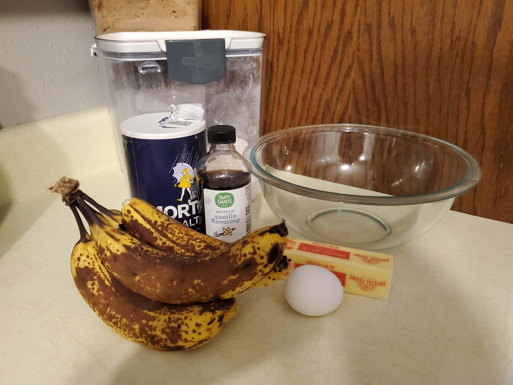
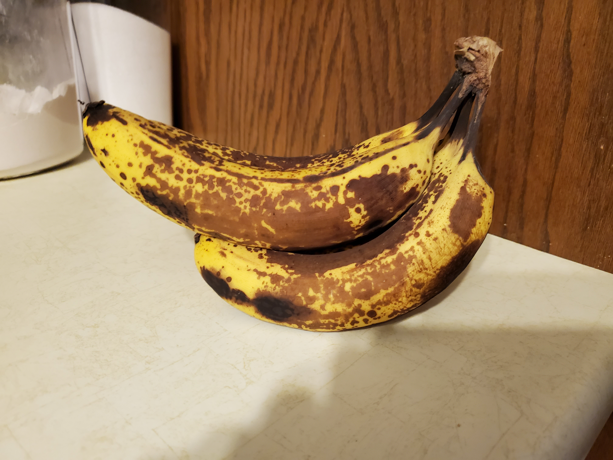

About Recipe
The beauty of this banana bread recipe is you don't need a fancy mixer! A mixing bowl, a fork to whisk the eggs and a sturdy spoon to mix the batter are all you need. The sugar amount is flexible. The original recipe called for a cup of white sugar, but most people, including me, do just fine with 3/4 of a cup, and many are happy with a 1/2 cup. You can toss in a cup of chopped nuts, raisins, or chocolate chips if you want, or put the batter into muffin tins and make banana nut muffins instead. You can even go a step further and make chocolate banana bread.
The best type of banana to use for banana bread
Ripe bananas make the best banana bread. And basically, the riper the better. The blacker the banana is, the sweeter it is — ensuring your bread has the most pronounced “banana-y” flavor. Just make sure the fruit hasn’t actually gone rotten. This makes banana bread the perfect use for those overripe bananas that have been sitting on your counter way too long. Or, even better, buy super ripe bananas from the start (bonus: they’re usually on sale).
How to bake the perfect banana bread
Follow these tips to ensure perfectly baked banana bread:
- Grease and flour the baking pan very well.
- Do not open the oven during baking unless you have to.
- If your banana bread is browning too much or too quickly, lightly tent the top with foil while baking.
- Make sure you preheat your oven completely to the correct temperature.
- Use a toothpick to test done-ness (it’ll come out clean with a poke).